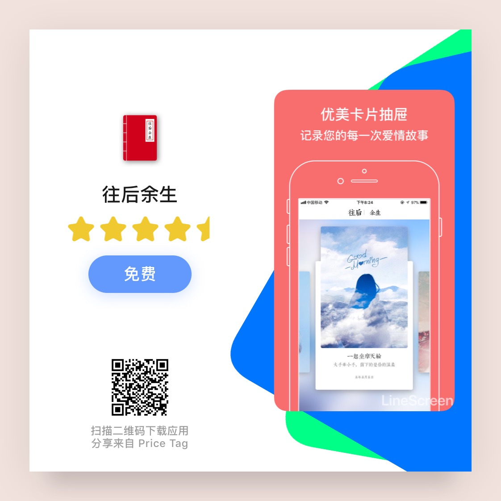
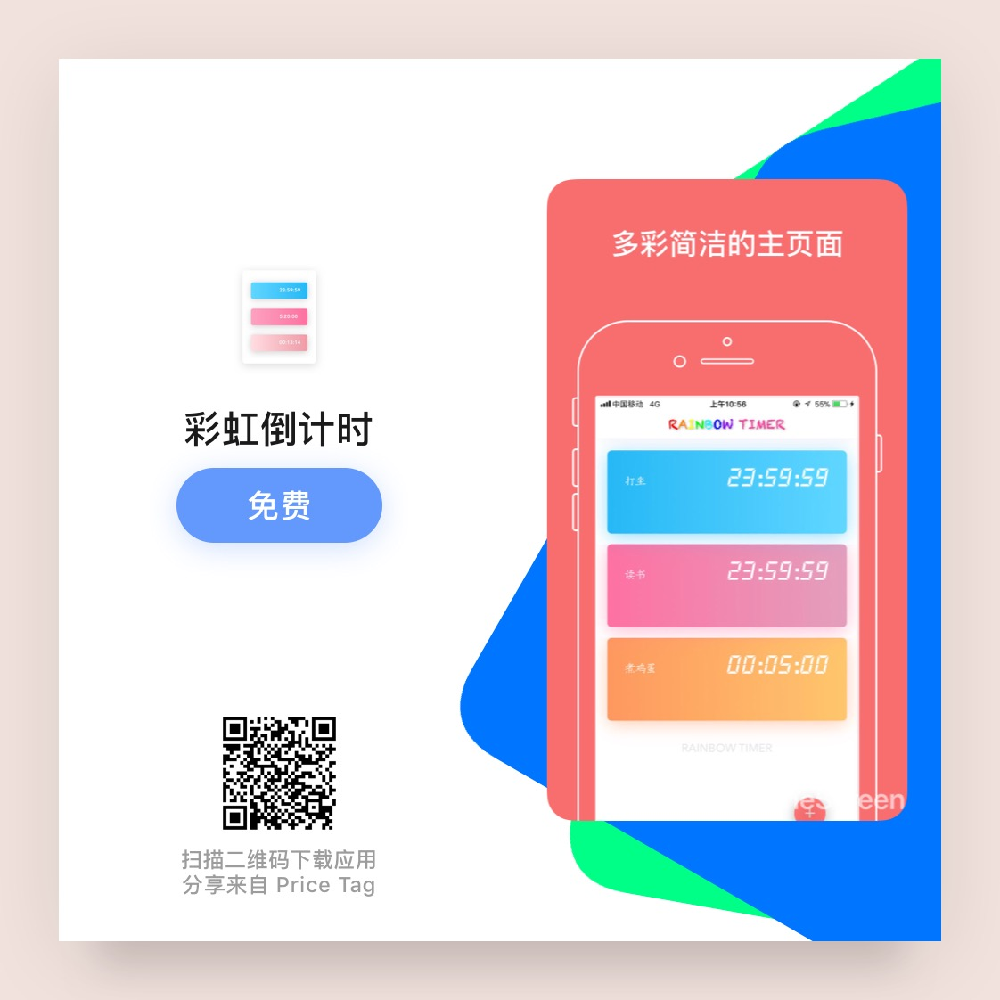
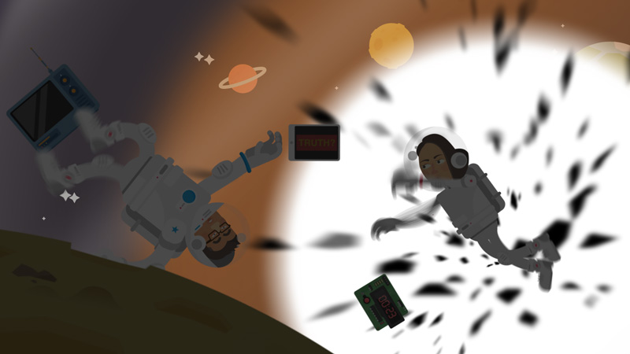
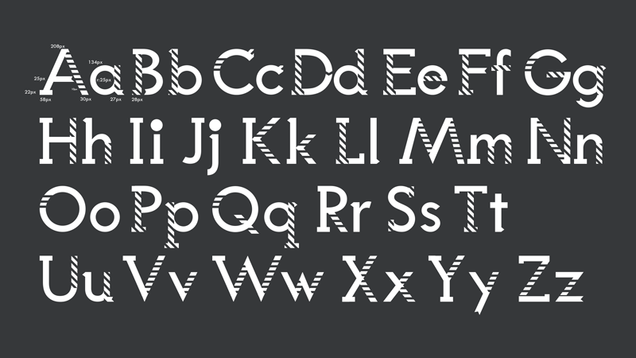
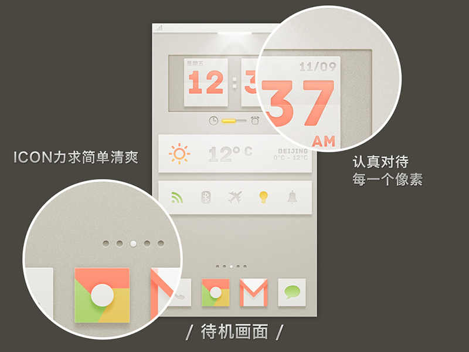

-
时间胶囊-给未来寄封信
- 简介
-
"*获【支付宝】Apple专区1元优选推荐*
*获【AppSo】AppWall推荐*
Ⅰ.收不到信的小伙伴请首先看一下自己的垃圾邮箱。
Ⅱ.如果邮箱设置了反垃圾邮件信会被直接拒收。造成的不便非常抱歉。
Ⅲ.信件寄出不能寄给当天。为了避免太多无意义的邮件在当天发出。
Ⅳ.寄信地址很重要，请不要写错
*非常感谢支持的朋友*
清早上火车站
长街黑暗无行人
卖豆浆的小店冒着热气
从前车马很慢
书信很远
一生只够爱一个人
-------------------------------------------- 时间是唯一的解药
过去现在及以后
一霎那的回眸
往事如烟
这封来自过去的一封信
诉说着未来他和她的故事 - JS Try it
-
九宫格切图
-
功能：制作九宫格切图，四宫格切图，心形拼图。
没有广告，没有付费，没有复杂的操作，只有让您感觉愉快的丝滑体验。
一键分享到各大社交平台，一键保存高清图片。
极简设计，还您纯净的使用体验。
希望您喜欢。并且赞一下下。 - APP Try it
-
功能：制作九宫格切图，四宫格切图，心形拼图。
-
闪念碎片
-
有没有一瞬间，你觉得现在的场景似曾相识。
有没有一瞬间，你觉得这个地方你曾经来过。
有没有一瞬间，你想起某个曾经忘却的感觉。
城市的车水马龙，或许已经让我们已经忘了初心何在。
不经意间的回眸，是你曾经消失的笑容，还是父母日渐佝偻的背影，或是是早已遗忘的梦想。
记忆碎片，帮你记住曾经丢掉的回忆。
帮你记住儿时麦田旁的忙碌，
帮你记住盛夏蝉鸣的惬意，
帮你记住雨夜孤单的思念。
如果有记忆碎片闪过，打开记忆碎片，记下它。日积月累，它将是你一生的财富，回忆是最美好的事情。
- APP Try it
-
有没有一瞬间，你觉得现在的场景似曾相识。
-
往后余生

-
Alitrip, formerly Taobao Travel, is one of the biggest platform for China's online travel sector, on which there has over 10,000 merchants providing airplane tickets, vacation packages, hotel booking services, visa application services and tour guide services.
As a Intern Front-End Engineer, I provided mobile-web and hybrid-apps development for our online travel business. Besides, I contribute to performance, UI rendering optimization and CSS library. - JS alitrip.com
-
Alitrip, formerly Taobao Travel, is one of the biggest platform for China's online travel sector, on which there has over 10,000 merchants providing airplane tickets, vacation packages, hotel booking services, visa application services and tour guide services.
-
《彩虹倒计时》

- HSlider, a full-page scrolling, touch-friendly jQuery slider plugin for mobile and modern desktop browser only. All its animations are powered by CSS3 with GPU acceleration and URL sharing with hash is supported.
- APP Github
-
《真相不止一个》

- Motion Graphic Design, powered by Adobe After Effect and cooperate with amazing artist @Psycho_fish
- Ae View
-
Intern @LxU Studio
- As a Intern Motion Graphic Designer, I participated in several creative advertising virus videos for our clients including Baidu and Continental.
- Ae @LxU
-
Puzzled Hybrid

- This font is parts of the course work of Design Basis, which mix Serif fonts, Sans-serif fonts and...zebra-stripe! Why I design it like that is still a puzzle to me, and the intro video is available below.
- Ps Ae View
-
Home - UI Design

- Participated in the students team with Huang Yi and Nie Ruijie as the UI Motion Designer. Won the first prize in 7th national IT application competition
- Fl News